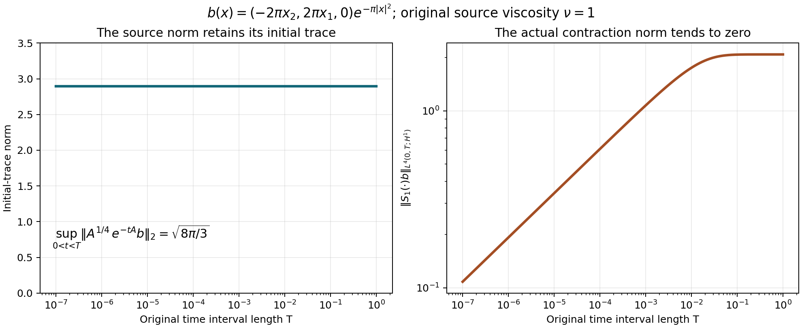

Critical mild solutions
A small time interval need not make the initial velocity small. It can, however, make a time integral of its heat evolution small. That distinction allows a contraction argument at the half-derivative threshold.
We work with the original equation
\[ u_t+\operatorname{div}(u\otimes u)+\nabla p=\nu\Delta u+f, \qquad\operatorname{div}u=0,\qquad\nu>0. \tag{1.0} \]The domain is \(\mathbb R^3\) or the rectangular periodic box \(Q=\prod_j(\mathbb R/L_j\mathbb Z)\), with every \(L_j>0\). The original Fourier factors, physical measure and Leray projection are those in Pressure and the divergence-free projection. In particular \(P(0)=I\) on the box. All Sobolev norms below include all vector components; matrix norms use the Frobenius norm.
Local theorem. For each divergence-free \(u_0\in H^{1/2}\) and original force \(f=f_a+f_b\), with \(f_a\in L^1_{\rm loc}H^{1/2}\) and \(f_b\in L^2_{\rm loc}H^{-1/2}\), there is a unique local solution in \(CH^{1/2}\cap L^2H^{3/2}\). It solves the full equation with the pressure constructed in Section 6, has the energy equality, and agrees with every energy weak solution with the same data and force. Section 7 gives stability and the exact maximal continuation criterion.
Section 8 also constructs solutions for all whole-space homogeneous \(\dot H^{1/2}\) data with the stated homogeneous force classes, including a quantitative small-data global theorem. These fields need not have finite kinetic energy; the finite-energy intersection and its receiving map are proved explicitly. Section 9 proves the periodic global result while retaining arbitrary velocity and force means. Five solved exercises include a source correction, an exact original forced flow, and the full scaling calculation.
1. Exact full-weight convolution on the whole space
Write
\[ W(\xi)=1+4\pi^2|\xi|^2,\qquad J(\xi)=\int_{\mathbb R^3} \frac{d\eta}{W(\eta)W(\xi-\eta)}. \tag{C1} \]For positive numbers \(A,B\), direct integration proves
\[ \frac1{AB}=\int_0^1\frac{dt}{((1-t)A+tB)^2}. \tag{C2} \]For \(A=B\) both sides equal \(A^{-2}\); otherwise evaluate the elementary antiderivative. Tonelli applies to the nonnegative integrand. Completing the square without changing the original Fourier weights gives
\[ (1-t)W(\eta)+tW(\xi-\eta) =1+4\pi^2|\eta-t\xi|^2 +4\pi^2t(1-t)|\xi|^2. \tag{C3} \]The substitution \(z=2\pi(\eta-t\xi)\) retains Jacobian \((2\pi)^{-3}\). For \(M>0\), polar coordinates and \(r=M\tan\theta\) give
\[ \int_{\mathbb R^3}\frac{dz}{(M^2+|z|^2)^2} =4\pi\int_0^\infty\frac{r^2\,dr}{(M^2+r^2)^2} =\frac{4\pi}{M}\int_0^{\pi/2}\sin^2\theta\,d\theta =\frac{\pi^2}{M}. \tag{C4} \]Consequently, with \(a=2\pi|\xi|\),
\[ J(\xi)=\frac1{8\pi}\int_0^1 \frac{dt}{\sqrt{1+a^2t(1-t)}} =\begin{cases} \displaystyle\frac{\arctan(a/2)}{4\pi a},&a>0,\\ \displaystyle\frac1{8\pi},&a=0. \end{cases} \tag{C5} \]To evaluate the last integral set \(t=(1+s)/2\). The even integral is \(\int_0^1(1+a^2/4-a^2s^2/4)^{-1/2}ds\), which equals \(2a^{-1}\arcsin(a/\sqrt{4+a^2})=2a^{-1}\arctan(a/2)\). This also gives the value at zero by its limit. Every low-frequency contribution remains present in C5.
A convenient nonsharp bound is
\[ \sup_\xi\sqrt{W(\xi)}J(\xi)\leq\frac14. \tag{C6} \]Indeed when \(0\leq a\leq1\), C5's integral is at most one, so the product is at most \(\sqrt2/(8\pi)<1/4\). When \(a\geq1\), \(\arctan(a/2)\leq\pi/2\), and the product is at most \(\sqrt{1+a^2}/(8a)\leq\sqrt2/8<1/4\). The exact kernel C5 is retained; C6 makes no claim about an optimal product constant.
For Schwartz \(f,g\), weighted Cauchy–Schwarz in the convolution gives
\[ |\widehat{fg}(\xi)|^2\leq J(\xi) \int W(\eta)W(\xi-\eta) |\widehat f(\eta)|^2|\widehat g(\xi-\eta)|^2d\eta. \tag{C7} \]Multiply by \(\sqrt W\), use C6, integrate and apply Tonelli. The resulting two integrals separate under \((\eta,\xi)\mapsto(\eta,\xi-\eta)\), with Jacobian one:
\[ \|fg\|_{H^{1/2}(\mathbb R^3)} \leq\frac12\|f\|_{H^1}\|g\|_{H^1}. \tag{C8} \]The extension to \(H^1\) is the actual product. Smooth approximations converge in \(H^1\) and hence in \(L^4\) by the already proved \(H^1\) interpolation. Their products converge in \(L^2\) by Hölder, while C8 makes them Cauchy in \(H^{1/2}\). The two limits therefore agree as distributions. Summing componentwise proves the identical bound for the Frobenius norm of \(u\otimes v\), with the full vector \(H^1\) norms and no extra dimension factor.
For comparison, the original homogeneous weights give the exact kernel
\[ \int\frac{d\eta}{|\eta|^2|\xi-\eta|^2} =\frac{\pi^3}{|\xi|}\quad(\xi\ne0). \tag{C9} \]Use C2, complete the same square without the constant term, apply C4 with \(M=\sqrt{t(1-t)}|\xi|\), and integrate \(\int_0^1(t(1-t))^{-1/2}dt=\pi\) by \(t=\sin^2\theta\). The exceptional frequency \(0\) has Lebesgue measure zero. The corresponding Schwartz estimate, retaining all Fourier factors, is
\[ \|fg\|_{\dot H^{1/2}}^2 \leq\frac{(2\pi)\pi^3}{(2\pi)^4} \|f\|_{\dot H^1}^2\|g\|_{\dot H^1}^2 =\frac18\|f\|_{\dot H^1}^2\|g\|_{\dot H^1}^2. \tag{C10} \]This is a separate exact comparison; it does not replace C1–C8 or discard the \(L^2\) part of the original fields. Section 8 specifies the complete homogeneous data class and its distributional realization before constructing its solutions.
2. Arbitrary periodic lengths, including the constant mode
Let \(Q\) have lengths \(L_1,L_2,L_3\), volume \(V=L_1L_2L_3\), frequencies \(\kappa_k=(k_j/L_j)_j\), and weights \(W_k=1+4\pi^2|\kappa_k|^2\). Put
\[ d^2=\sum_{j=1}^3\frac1{4L_j^2},\qquad A=2(1+4\pi^2d^2),\qquad S_k=\sum_{\ell\in\mathbb Z^3}\frac1{W_\ell W_{k-\ell}}. \tag{C11} \]Tile frequency space by the cells centered at \(\kappa_\ell\) with side lengths \(1/L_j\). Each has volume \(1/V\). At \(\eta=\kappa_\ell+r\) in that cell, \(|r|\leq d\) and
\[ W(\eta)\leq A W_\ell,\qquad W(\kappa_k-\eta)\leq A W_{k-\ell}. \tag{C12} \]For example the first follows from \(|\kappa_\ell+r|^2\leq2|\kappa_\ell|^2+2d^2\) and expanding \(AW_\ell\). All additional terms in that expansion are nonnegative. Therefore integration on every cell and summation yield
\[ \frac{S_k}{V}\leq A^2J(\kappa_k),\qquad \sup_k\frac{\sqrt{W_k}S_k}{V}\leq\frac{A^2}{4}. \tag{C13} \]This proves convergence of the lattice convolution at every \(k\), including \(k=0\). Weighted Cauchy–Schwarz in the product coefficient, followed by Parseval with its actual factor \(V\), now gives
\[ \|fg\|_{H^{1/2}(Q)} \leq M_Q\|f\|_{H^1(Q)}\|g\|_{H^1(Q)},\qquad M_Q=A/2=1+\pi^2\sum_jL_j^{-2}. \tag{C14} \]Indeed the squared output is bounded by \(V\sup_k(\sqrt{W_k}S_k)\) times the product of the two coefficient sums; each input norm squared is \(V\) times its sum. C13 supplies exactly the coefficient \(M_Q^2\). Smooth approximation identifies the product as above. No periodic mean is subtracted, and all terms \(\ell=0\) or \(k-\ell=0\) are included.
3. The receiving nonlinear operator
Set \(M_{\mathbb R^3}=1/2\) and \(M_Q\) as in C14. The original matrix divergence has symbol \(2\pi i\xi_j\), or \(2\pi i(\kappa_k)_j\). Because \(P\) is an orthogonal projection and \(4\pi^2|\xi|^2\leq W(\xi)\),
\[ \|P\operatorname{div}(u\otimes v)\|_{H^{-1/2}} \leq\|u\otimes v\|_{H^{1/2}} \leq M_\Omega\|u\|_{H^1}\|v\|_{H^1}. \tag{C15} \]The tensor convention is \((u\otimes v)_{ij}=u_i v_j\). Cauchy–Schwarz over \(j\) proves the first multiplier bound, and \(P\) cannot increase it. At periodic frequency \(0\) the divergence coefficient is zero; \(P(0)=I\) is still retained. In time, Hölder gives the complete bilinear map
\[ \|P\operatorname{div}(u\otimes v)\|_{L^2(0,T;H^{-1/2})} \leq M_\Omega\|u\|_{L^4(0,T;H^1)} \|v\|_{L^4(0,T;H^1)}. \tag{C16} \]4. Exact heat estimates at the half derivative
Let \(s=1/2\), \(\nu>0\), and
\[ \begin{gathered} X_T=C([0,T];H^s)\cap L^2(0,T;H^{s+1}), \qquad Z_T=L^4(0,T;H^1),\\ \|v\|_{X_T}^2=\sup_t\|v(t)\|_{H^s}^2 +\int_0^T\|v\|_{H^{s+1}}^2dt. \end{gathered} \tag{C17} \]The full weights obey \(W^{s+1}=W^s+4\pi^2|\xi|^2W^s\), including frequency \(0\). The same identity holds termwise on \(Q\). Spectral Cauchy–Schwarz and then time integration give
\[ \|v\|_{Z_T}^4\leq \sup_t\|v(t)\|_{H^{1/2}}^2 \int_0^T\|v\|_{H^{3/2}}^2dt, \qquad\|v\|_{Z_T}\leq\|v\|_{X_T}/\sqrt2. \tag{C18} \]The last step uses \(AB\leq(A^2+B^2)/2\) for the two nonnegative norm components.
The unforced heat orbit satisfies
\[ \|S_\nu(\cdot)a\|_{X_T} \leq C_0(T,\nu)\|a\|_{H^s},\qquad C_0(T,\nu)=\sqrt{1+T+(2\nu)^{-1}}. \tag{C19} \]The supremum is a contraction. In the time integral separate the exact multiplier \((1+4\pi^2r^2)e^{-8\pi^2\nu r^2t}\) into its constant and derivative terms. Their integrals are bounded respectively by \(T\) and \(1/(2\nu)\), with the derivative term zero at \(r=0\). This proves C19 without removing that constant mode. Dominated convergence proves the strong initial trace.
For zero data and forcing \(h\in L^2(0,T;H^{s-1})\), Fourier truncation and the weighted energy identity give, with \(E=\|v\|_{H^s}^2\), \(D=\|\nabla v\|_{H^s}^2\),
\[ E'+2\nu D\leq2\|h\|_{H^{s-1}}\sqrt{E+D} \leq\nu(E+D)+\nu^{-1}\|h\|_{H^{s-1}}^2. \tag{C20} \]Thus \(E_{\rm sup}\leq e^{\nu T}\nu^{-1}\|h\|_{L^2H^{s-1}}^2\). Integrating C20 yields \(\int D\leq T E_{\rm sup}+\nu^{-2}\|h\|_{L^2H^{s-1}}^2\). Adding the retained integral of \(E\) proves
\[ \left\|\int_0^tS_\nu(t-r)h(r)dr\right\|_{X_T} \leq C_f(T,\nu)\|h\|_{L^2H^{s-1}},\qquad C_f(T,\nu)^2=\frac{(1+2T)e^{\nu T}}{\nu}+\frac1{\nu^2}. \tag{C21} \]Construct first by bounded Fourier cutoffs. Applying C21 to differences makes them Cauchy in \(X_T\); hence their limit has the claimed continuous trace and satisfies the original Fourier integral equation. The bound passes to that limit. This also proves uniqueness of the linear solution.
For \(g\in L^1H^s\), the corresponding bound is \(C_0(T,\nu)\|g\|_{L^1H^s}\). To prove it, first take smooth time functions, apply Minkowski to the time-shifted heat orbits, and use C19 uniformly for intervals of length at most \(T\). Approximation in \(L^1H^s\) and the same estimate give the general continuous \(X_T\) solution. All occurrences of \(P\) may be inserted because it is a contraction on every original weighted space.
5. Local construction in the full inhomogeneous data class
Take divergence-free \(a\in H^{1/2}\) and the actual original force \(f=f_a+f_b\), with \(f_a\in L^1_{\rm loc}H^{1/2}\) and \(f_b\in L^2_{\rm loc}H^{-1/2}\). It need not be divergence free. Put
\[ w(t)=S_\nu(t)a+\int_0^tS_\nu(t-r)Pf(r)dr,\qquad B(u,v)(t)=-\int_0^tS_\nu(t-r)P\operatorname{div}(u\otimes v)(r)dr. \tag{C22} \]C16–C21 give
\[ \begin{gathered} \|B(u,v)\|_{X_T}\leq C_f(T,\nu)M_\Omega\|u\|_{Z_T}\|v\|_{Z_T},\\ \|B(u,v)\|_{Z_T}\leq K_T\|u\|_{Z_T}\|v\|_{Z_T}, \qquad K_T=C_f(T,\nu)M_\Omega/\sqrt2. \end{gathered} \tag{C23} \]Fix a compact force interval \([0,T_c]\). Its constants bound those for all \(T\leq T_c\). The initial heat orbit is in \(Z_{T_c}\), by C18–C19, so its \(Z_T\) norm tends to zero by absolute continuity of its fourth-power integral. The two original force contributions tend to zero in \(X_T\), hence \(Z_T\), by C19 and C21 with constants bounded at \(T_c\). Consequently a positive \(T\) exists with \(\lambda=\|w\|_{Z_T}\leq1/(8K_{T_c})\).
On the closed ball \(\|u\|_{Z_T}\leq2\lambda\), the map \(u\mapsto w+B(u,u)\) maps the ball into itself: its norm is at most \(\lambda+4K_{T_c}\lambda^2\leq3\lambda/2\). Its difference bound is at most \(4K_{T_c}\lambda\leq1/2\) times the input difference. Iteration is Cauchy by the geometric series of consecutive differences; completeness of \(Z_T\) gives a fixed point. If \(\lambda=0\), the zero ball already gives the fixed point. By C22–C23 that point belongs to \(X_T\), with initial value \(a\) and the original projected equation.
Uniqueness holds in \(X_T\), beyond the contraction ball. Two \(X_T\) solutions belong to \(Z_T\) by C18. Partition the finite interval so that the sum of their two \(Z\) norms on each piece is less than \(1/(2K_{T_c})\); such a finite partition exists by absolute continuity of the sum of their fourth-power integrals. On the first piece their initial difference is zero, and C23 forces equality. At each endpoint continuity gives equal next initial values. The semigroup law splits C22 exactly at that endpoint, so induction gives equality on every piece.
6. Original pressure, energy and comparison
The force has not been replaced by its projection. The missing component is exactly the pressure gradient. Put \(M=u\otimes u\). By C8, C14 and C18, \(M\in L^2H^{1/2}\). On the whole space define
\[ \widehat p_N(\xi)=-\sum_{i,j}\frac{\xi_i\xi_j}{|\xi|^2} \widehat M_{ij}(\xi),\qquad \xi\ne0, \quad \widehat p_f(\xi)=-\frac{i\xi\cdot\widehat f(\xi)}{2\pi|\xi|^2}. \tag{6.1} \]The value assigned to the first multiplier at zero does not change its Lebesgue integral. Its matrix contraction has norm at most one, so \(p_N\in L^2H^{1/2}\). For the force term, use any original cutoff radius \(\Lambda>0\). Its Fourier expression on \(0<|\xi|\leq\Lambda\) is integrable by Cauchy–Schwarz against the \(H^{-1}\) norm:
\[ \int_{|\xi|\leq\Lambda} \frac{|\widehat f(\xi)|}{2\pi|\xi|}\,d\xi \leq \|f\|_{H^{-1}} \left[\int_{|\xi|\leq\Lambda} \frac{1+4\pi^2|\xi|^2}{4\pi^2|\xi|^2}\,d\xi\right]^{1/2}. \tag{6.2} \]The integral in brackets is \(\Lambda/\pi+4\pi\Lambda^3/3\). On the remaining region, the multiplier squared divided by the \(H^{-1}\) input weight is bounded by \(1+(4\pi^2\Lambda^2)^{-1}\). Thus the high part is in \(L^2\). Both force summands belong locally in time to \(L^1H^{-1}\), so these formulas define a space-time distribution. They are the full force-pressure construction of the whole-space weak-solution chapter.
On the box take \(p_0=0\), and at every \(k\ne0\) take
\[ (p_N)_k=-\sum_{i,j}\frac{(\kappa_k)_i(\kappa_k)_j}{|\kappa_k|^2} (u_i u_j)_k,\qquad (p_f)_k=-\frac{i\kappa_k\cdot f_k}{2\pi|\kappa_k|^2}. \tag{6.3} \]These are distributions by the spectral gap and the original Sobolev weights. Direct multiplication proves \(\nabla(p_N+p_f)=(I-P)(f-\operatorname{div}M)\) on both domains. Consequently C22 solves (1.0) with \(p=p_N+p_f\). On the box the zero coefficient of the equation is exactly
\[ u_0(t)=u_0(0)+\int_0^t f_0(r)\,dr. \tag{6.4} \]Here subscripts zero denote Fourier coefficients, not the initial datum. No force mean has been transferred into a nonperiodic pressure.
The velocity lies in \(CL^2\cap L^2H^1\). Also \(u\in L^4H^1\subset L^4L^4\), by the previously proved \(H^1\)-to-\(L^4\) interpolation. Hence \(M\in L^2L^2\). Test the projected equation with the bounded Fourier cutoff \(E_Ku\), or equivalently test the cutoff equation with itself. The resulting curves are absolutely continuous in \(L^2\). All limits in their integrated norm identity are explicit: endpoints converge in \(CL^2\), gradients in \(L^2L^2\), the nonlinear pairing by \(M\in L^2L^2\) and gradient convergence, the \(f_a\) pairing by \(L^1L^2\) against \(CL^2\), and the \(f_b\) pairing by \(L^2H^{-1}\) against \(L^2H^1\).
At almost every time \(u\in H^1\). The nonlinear energy integral vanishes there. On the box integrate the divergence of \(u|u|^2/2\). On the whole space first use smooth divergence-free Fourier approximations and a cutoff \(\chi(x/R)\); the boundary error is bounded by \(C R^{-1}\|u\|_3^3\), which tends to zero. The integral \(\int u_i u_j\partial_j u_i\) passes through the \(H^1\) approximation by \(L^4,L^4,L^2\) Hölder. Therefore
\[ \frac12\|u(t)\|_2^2+\nu\int_s^t\|\nabla u\|_2^2dr =\frac12\|u(s)\|_2^2+\int_s^t\langle f,u\rangle dr \quad(0\leq s\leq t). \tag{6.5} \]This gives the full energy weak class, with equality at all starts and endings, for the constructed finite-energy solution.
We also prove comparison with every energy weak solution \(U\), whose force \(F\) may lie in \(L^1L^2+L^2H^{-1}\). The cutoff cross-test argument of the preceding chapter applies with the following exact convergence estimates at the present lower regularity. The reference derivative has the decomposition
\[ u_t=Pf_a+b,\qquad b=\nu\Delta u+Pf_b-P\operatorname{div}(u\otimes u) \in L^2H^{-1/2}. \tag{6.6} \]The weak velocity is absolutely continuous in \(H^{-m}\), \(m>5/2\), as proved there. Thus it can be paired by the dual product rule with \(E_Ku\). The derivative errors tend to zero by \(U\in L^\infty L^2\) against \(E_KPf_a-Pf_a\in L^1L^2\), and \(U\in L^2H^{1/2}\) against \(E_Kb-b\in L^2H^{-1/2}\). The weak quadratic tensor lies in \(L^{4/3}L^2\); the reference cutoff error tends to zero in \(L^4H^1\). These are dual time exponents. Diffusion errors use \(L^2H^1\). Force errors use \(CL^2\) and \(L^2H^1\). Endpoints use the all-time \(L^2\) bound on \(U\) and the reference's \(CL^2\) convergence. We obtain at every \(s,t\)
\[ \begin{aligned} &(U(t),u(t))-(U(s),u(s))\\ &=\int_s^t\left[\langle u_r,U\rangle +\int U_iU_j\partial_j u_i -\nu\int\nabla U : \nabla u+\langle F,u\rangle\right]dr. \end{aligned} \tag{6.7} \]The derivative pairing uses exactly the two summands in (6.6).
Put \(z=U-u\). At almost every time both fields are in \(H^1\). The cancellation \(\int z\cdot\nabla|u|^2=0\) is justified by \(z\in L^3\) and \(u\nabla u\in L^{3/2}\). Smooth \(H^1\) approximation passes these products; the whole-space cutoff error is at most \(C R^{-1}\|z\|_3\|u\|_3^2\). All time integrals exist: \(z\otimes z\in L^{4/3}L^2\), \(\nabla u\in L^4L^2\), and \(u\in L^4L^6,z\in L^4L^3,\nabla z\in L^2L^2\). Subtracting (6.7) from the two energy relations, with the full force terms kept, therefore gives
\[ \frac12\|z(t)\|_2^2+\nu\int_s^t\|\nabla z\|_2^2 \leq\frac12\|z(s)\|_2^2 +\int_s^t\int u_i z_j\partial_jz_i +\int_s^t\langle F-f,z\rangle. \tag{6.8} \]Its starting times are zero and the weak solution's permitted energy starts; every later ending time is allowed. The exact estimates (4.6)–(4.12) of Velocity bounds and uniqueness now apply with \(q=6,p=4\): their coefficient is integrable because \(u\in L^4H^1\subset L^4L^6\). Those estimates were proved solely from this relative-energy inequality. In particular equal original data and forces give \(U=u\) at every time. This proves uniqueness against the full energy class for the force class of the local theorem.
7. Stability and maximal continuation
Write \(L_T=M_\Omega C_f(T,\nu)\), so \(K_T=L_T/\sqrt2\). For two constructed solutions \(u,v\), let \(w_u,w_v\) denote their full linear inputs in C22, including both original force summands. Set \(R=\|u\|_{Z_T}+\|v\|_{Z_T}\). If \(K_TR<1\), subtraction of the integral equations and C23 prove
\[ \|u-v\|_{Z_T}\leq \frac{\|w_u-w_v\|_{Z_T}}{1-K_TR},\qquad \|u-v\|_{X_T}\leq \frac{\|w_u-w_v\|_{X_T}}{1-K_TR}. \tag{7.1} \]For the second estimate use \(\|u-v\|_X\leq\|w_u-w_v\|_X+L_TR\|u-v\|_Z\) and C18. The entire linear-input difference is bounded by
\[ C_0(T,\nu)\bigl(\|u(0)-v(0)\|_{H^{1/2}} +\|f_a-g_a\|_{L^1H^{1/2}}\bigr) +C_f(T,\nu)\|f_b-g_b\|_{L^2H^{-1/2}}. \tag{7.2} \]No initial trace has been discarded. Finite partitions as in Section 5 extend stability along every existing compact interval. More explicitly, choose pieces on which \(K_TR\leq1/2\), using a common larger-interval constant. If \(e_j\) bounds the difference in \(X\) on piece \(j\), then (7.1)–(7.2) give \(e_j\leq2C_0e_{j-1}+2C_0A_j+2C_fB_j\), with the initial-data norm in place of \(e_0\). Here \(A_j,B_j\) are the actual force difference norms on that piece. Iterating this finite recurrence proves continuous dependence. Such a common partition can be chosen before constructing the perturbed solution. Require the reference solution's \(Z\) norm on each piece to be at most \(1/(32K_T)\). Its linear input there is \(w=u-B(u,u)\), so \(\|w\|_Z\leq(1/32+1/1024)/K_T<1/(16K_T)\). For nearby data, this puts the base linear input below \(1/(16K_T)\); small perturbations in (7.2) leave it below \(1/(8K_T)\), so the same contraction interval works. The constructed perturbed norm is at most \(1/(4K_T)\), and the sum with the reference norm is at most \(9/(32K_T)<1/(2K_T)\), as required in (7.1). The finite recurrence controls the next initial discrepancy; choosing the original data and force discrepancies sufficiently small keeps every one of the finitely many linear perturbations below \(1/(16K_T)\). Repeating over the finite partition proves existence on each prescribed compact subinterval for sufficiently nearby data as well.
Local solutions glue uniquely because their initial traces agree and the integral splits exactly by the heat semigroup law. Let \(T_*\) be the supremum of their intervals, and suppose the original force is given on \([0,T_0)\). If \(T_*<T_0\) and \(\int_0^{T_*}\|u\|_{H^1}^4dt<\infty\), then C16 places the entire nonlinear force in \(L^2(0,T_*;H^{-1/2})\). C19–C22 extend its Duhamel expression continuously to \(T_*\) in \(H^{1/2}\), and in \(L^2H^{3/2}\), with the unchanged force. Starting the local construction at this actual terminal value extends the solution past \(T_*\), a contradiction. Thus an interior finite maximal endpoint must satisfy
\[ \int_0^{T_*}\|u(t)\|_{H^1}^4dt=\infty. \tag{7.3} \]This proof does not assert that an arbitrary bounded critical norm alone supplies a uniform lifespan.
If the actual force belongs to the stronger class \(L^1_{\rm loc}H^1+L^2_{\rm loc}L^2\), then this critical solution is an \(H^1\) strong solution after each positive time. To prove it, choose an almost-everywhere time \(a\) with \(u(a)\in H^{3/2}\subset H^1\). Start the \(H^1\) solution constructed in Strong solutions and continuation there. It also lies in the current critical class on its compact intervals, so uniqueness makes it equal to \(u\). The latter has finite \(L^4L^6\) norm on each compact critical interval. The already proved nonendpoint criterion therefore continues the \(H^1\) solution across every earlier proposed endpoint. Choosing \(a\) below any given positive time proves the claim. This extra regularity has been stated with its actual force hypothesis.
8. The full homogeneous whole-space construction
We now specify the homogeneous spaces without hiding a polynomial or constant ambiguity. Put \(a(\xi)=2\pi|\xi|\). For \(s=-1/2,1/2,1\), an element of \(\dot H^s(\mathbb R^3)\) is the tempered distribution whose Fourier transform is a measurable function \(F\) with
\[ \|F\|_{\dot H^s}^2=\int a(\xi)^{2s}|F(\xi)|^2d\xi<\infty. \tag{8.1} \]This realization is well defined: for every Schwartz test \(\phi\), Cauchy–Schwarz bounds its pairing by the norm in (8.1) times \((\int a^{-2s}|\phi|^2)^{1/2}\). Near zero this last integral is finite precisely for \(s<3/2\); at infinity Schwartz decay applies. It also proves continuous inclusion into tempered distributions and uniqueness of the realization. In particular no delta mass at frequency zero, and hence no nonzero polynomial velocity, is added to this space.
These spaces are complete because their Fourier weighted \(L^2\) spaces are complete. Smooth Fourier functions supported in compact annuli are dense: truncate the two frequency tails in the weighted integral, then approximate on the remaining annulus by smooth functions. Their inverse transforms are Schwartz and vanish in frequency near zero. Thus (8.1) also proves the exact identification with the source's completion of that test class. The divergence-free subspace is the closed condition \(\xi\cdot F(\xi)=0\) almost everywhere.
For \(\dot H^1\), this realization is an actual \(L^6\) function. Indeed the homogeneous Sobolev inequality already proved in the strong-solution chapter makes the annular approximations Cauchy in \(L^6\). Their \(L^6\) distributional limit agrees with the Fourier limit, and \(\|v\|_6\leq(4/\sqrt3)\|v\|_{\dot H^1}\). Consequently C10 extends to the actual product of any two \(\dot H^1\) fields: their products converge in \(L^3\), while C10 makes them converge in \(\dot H^{1/2}\), and the two distributional limits coincide. The tensor version follows by summing components. The original divergence and projection therefore satisfy
\[ \|P\operatorname{div}(u\otimes v)\|_{\dot H^{-1/2}} \leq\|u\otimes v\|_{\dot H^{1/2}} \leq M_*\|u\|_{\dot H^1}\|v\|_{\dot H^1}, \qquad M_*=\frac1{2\sqrt2}. \tag{8.2} \]The first bound retains the exact multiplier \(a^{-1}\) in the squared output norm and the factor \(a^2\) from the original divergence.
Define the solution space by requiring both \(u\in C([0,T];\dot H^{1/2})\) and \(\int_0^T\int a^3|\widehat u|^2<\infty\). The latter measures the same distribution already specified by the former; it introduces no separate quotient at the exponent \(3/2\). Write
\[ \|u\|_{\dot X_T}^2= \sup_t\int a|\widehat u(t)|^2+ \int_0^T\int a^3|\widehat u|^2, \qquad \dot Z_T=L^4(0,T;\dot H^1). \tag{8.3} \]Completeness follows from completeness of the two weighted integrals: the limits agree on every compact frequency annulus, where their weights are bounded above and below, and these annuli cover all nonzero frequencies. The first component fixes the distribution at zero. Spectral and time Cauchy–Schwarz again give \(\|u\|_{\dot Z_T}\leq\|u\|_{\dot X_T}/\sqrt2\).
Retaining \(\nu>0\), the heat estimates now have constants independent of the time interval, including \(T=\infty\), where continuity is required at every finite time:
\[ \begin{split} \|S_\nu(\cdot)b\|_{\dot X_T}&\leq A_\nu\|b\|_{\dot H^{1/2}}, &A_\nu&=\sqrt{1+(2\nu)^{-1}},\\ \left\|\int_0^t S_\nu(t-r)h(r)dr\right\|_{\dot X_T} &\leq B_\nu\|h\|_{L^2\dot H^{-1/2}}, &B_\nu&=\sqrt{\nu^{-1}+\nu^{-2}}. \end{split} \tag{8.4} \]For the first, integrate the original multiplier: \(\int_0^T a^3e^{-2\nu a^2t}dt =a(1-e^{-2\nu a^2T})/(2\nu)\). For the second, set \(E=\|v\|_{\dot H^{1/2}}^2\) and \(D=\int a^3|\widehat v|^2\). The exact energy pairing gives
\[ E'+2\nu D\leq2\|h\|_{\dot H^{-1/2}}\sqrt D \leq\nu D+\nu^{-1}\|h\|_{\dot H^{-1/2}}^2. \tag{8.5} \]With zero data, the supremum of \(E\) is at most \(\nu^{-1}\|h\|^2\) and the integral of \(D\) at most \(\nu^{-2}\|h\|^2\). Approximate by compact frequency annuli and integrable smooth time functions; these same estimates on differences give convergence in \(\dot X_T\) and the exact continuous trace. The Fourier equation passes on every annulus and then as a tempered distribution by (8.1). This constructs the linear operator rather than assuming its existence. The \(L^1\dot H^{1/2}\) force bound is \(A_\nu\) times that norm, by time-shifted (8.4), Minkowski and approximation as in Section 4.
The local theorem therefore holds for every divergence-free \(b\in\dot H^{1/2}\) and actual force
\[ f=f_a+f_b,\qquad f_a\in L^1_{\rm loc}\dot H^{1/2},\quad f_b\in L^2_{\rm loc}\dot H^{-1/2}. \tag{8.6} \]Here is the complete contraction bound. Define \(w\) and \(B\) by C22 on these spaces. Then
\[ \|B(u,v)\|_{\dot X_T}\leq B_\nu M_*\|u\|_{\dot Z_T}\|v\|_{\dot Z_T}, \qquad \|B(u,v)\|_{\dot Z_T}\leq K_*\|u\|_{\dot Z_T}\|v\|_{\dot Z_T}, \quad K_*=B_\nu/4. \tag{8.7} \]The free heat orbit has an integrable fourth power in \(\dot Z\) on any fixed interval by (8.4), so its restricted norm tends to zero as the interval shrinks. Both force contributions tend to zero by their actual norms in (8.6). Choose \(\|w\|_{\dot Z_T}\leq1/(8K_*)\). Exactly the ball, geometric iteration and finite-partition uniqueness proof of Section 5, with the constants in (8.7), now apply. They prove existence and uniqueness in the entire \(\dot X_T\) class. Repeating the explicit subtraction in (7.1) proves stability there. The terminal Duhamel argument proves that an interior finite maximal endpoint must have \(\int_0^{T_*}\|u\|_{\dot H^1}^4=\infty\).
There is also a quantitative global theorem. If the original force summands in (8.6) have finite norms on \((0,\infty)\), put
\[ \Lambda_*= \frac{A_\nu}{\sqrt2} \bigl(\|b\|_{\dot H^{1/2}}+\|f_a\|_{L^1\dot H^{1/2}}\bigr) +\frac{B_\nu}{\sqrt2}\|f_b\|_{L^2\dot H^{-1/2}}. \tag{8.8} \]If \(\Lambda_*\leq1/(8K_*)\), the same contraction is on \(\dot Z_\infty\), giving one solution on the entire half-line with
\[ \|u\|_{\dot Z_\infty}\leq2\Lambda_*,\qquad \|u\|_{\dot X_\infty} \leq\sqrt2\Lambda_*+4B_\nu M_*\Lambda_*^2. \tag{8.9} \]The norm bound for \(w\) used here is exactly \(\sqrt2\Lambda_*\). Uniqueness on every finite interval proves global uniqueness among solutions locally in the stated class, even if a comparison solution was not assumed small or globally bounded. These thresholds are explicit sufficient bounds, with no optimality claim.
The pressure for (8.6) needs an additional low-frequency step because these forces need not belong to the inhomogeneous force class. The nonlinear pressure in (6.1) still belongs to \(L^2\dot H^{1/2}\), by (8.2). For each force summand with Fourier function \(F\), put \(m_F(\xi)=-i\xi\cdot F/(2\pi|\xi|^2)\). Choose an even real smooth \(\chi_\Lambda\) equal to one near zero and supported in \(|\xi|<2\Lambda\), with \(\Lambda>0\). Define
\[ \langle\widehat p_F,\phi\rangle =\int m_F(\xi) [\phi(\xi)-\chi_\Lambda(\xi)\phi(0)]\,d\xi. \tag{8.10} \]Near zero the bracket is bounded by a test-dependent constant times \(|\xi|\), so its product with \(m_F\) is bounded by a constant times \(|F|\). This is integrable for both \(s=1/2\) and \(s=-1/2\) by (8.1). Away from zero, weighted Cauchy–Schwarz and Schwartz decay prove convergence and continuity in the test topology. The same bounds are continuous in the two force norms, so their time integrals define the pressure distribution. This is a specified potential, not an omission of its low-frequency part.
Testing its derivative replaces \(\phi\) by \(2\pi i\xi_j\phi\), whose value at zero is zero. It follows exactly that \(2\pi i\xi_j\widehat p_F=\xi_j(\xi\cdot F)/|\xi|^2\). Thus \(\nabla p_F=(I-P)f\), and the constructed solution solves the original full equation. Replacing \(\chi_\Lambda\) by another permitted cutoff changes (8.10) by \(-\phi(0)\int m_F(\chi_\Lambda-\widetilde\chi)\); this integral is finite because the difference vanishes near zero. The change is exactly a multiple of \(\delta_0\), hence a spatially constant pressure, whose gradient is zero. This proves the entire gauge comparison.
Finally retain the finite-energy intersection. Suppose the same data and force also satisfy the inhomogeneous local theorem. Its solution lies in \(\dot X\), since \(a\leq\sqrt{1+a^2}\) and \(a^3\leq(1+a^2)^{3/2}\). The Fourier equation identifies it with the homogeneous solution by uniqueness. Both pressure formulas have the same gradient; where (6.1) is integrable at zero their difference is the explicit spatial constant just computed.
If the homogeneous solution is global, the finite-energy one is also global. To prove this without losing its \(L^2\) norm, write the actual finite-energy force as \(F_a+F_b\in L^1_{\rm loc}L^2+L^2_{\rm loc}H^{-1}\). For any \(\eta>0\), (6.5) gives, with \(Y=\|u\|_2^2\),
\[ Y'+\nu\|\nabla u\|_2^2 \leq(\nu+\|F_a\|_2/\eta)Y +\eta\|F_a\|_2+\nu^{-1}\|F_b\|_{H^{-1}}^2. \tag{8.11} \]This follows from \(2\|F_a\|_2\sqrt Y\leq\|F_a\|_2(Y/\eta+\eta)\) and
\[ \begin{split} 2\|F_b\|_{H^{-1}}\sqrt{Y+\|\nabla u\|_2^2} &\leq\nu(Y+\|\nabla u\|_2^2)\\ &\quad+\nu^{-1}\|F_b\|_{H^{-1}}^2. \end{split} \]The integrating factor bounds \(Y\) uniformly before any proposed finite endpoint. Moreover \(\|u\|_{H^1}^4\leq2Y^2+2\|u\|_{\dot H^1}^4\). The second term is integrable on that interval by the global homogeneous solution. This contradicts (7.3). The full \(L^2\) contribution and all original forces therefore persist globally. The homogeneous theorem also remains valid for data outside this intersection; no finite-energy assertion has been added for those data.
9. Periodic global solutions with arbitrary means
The periodic mean can be arbitrarily large, and can change under its original force. Denote actual spatial averages by bars and define
\[ \begin{gathered} m(t)=\overline{u_0}+\int_0^t\overline f(r)dr, \qquad c(t)=\int_0^t m(r)dr,\\ w(y,t)=u(y+c(t),t)-m(t),\\ g(y,t)=f(y+c(t),t)-\overline f(t). \end{gathered} \tag{9.1} \]The mean force is locally integrable for the inhomogeneous force class: its coefficient is bounded by \(V^{-1/2}\) times either force norm, and an \(L^2\) time function is \(L^1\) on compact intervals. Thus \(m\) is absolutely continuous and \(c\) is continuously differentiable there.
With \(q(y,t)=p(y+c(t),t)\), the exact transformed equation is
\[ w_t+\operatorname{div}(w\otimes w)+\nabla q=\nu\Delta w+g, \qquad \overline w=\overline g=0. \tag{9.2} \]Indeed the inverse is \(u(x,t)=m(t)+w(x-c(t),t)\): its time derivative contributes \(m'+w_t-m\cdot\nabla w\), while its nonlinear derivative contributes \(m\cdot\nabla w+(w\cdot\nabla)w\). The transport terms cancel and \(m'=\overline f\) restores the full force. The inverse pressure is \(p(x,t)=q(x-c(t),t)\). These identities also hold for the solution classes here: change variables in smooth periodic space-time tests, use \(c'=m\), and integrate the locally integrable \(m'\) term. Approximation of the time tests proves the distributional chain rule at exactly this regularity. The construction has an explicit inverse and retains the actual mean equation; it does not replace the original velocity.
For \(k\ne0\),
\[ w_k(t)=e^{2\pi i\kappa_k\cdot c(t)}u_k(t),\qquad g_k(t)=e^{2\pi i\kappa_k\cdot c(t)}f_k(t). \tag{9.3} \]The zero coefficients in (9.1) are retained separately as \(m\) and \(\overline f\). All weights, periods and \(V\) remain unchanged. On mean-zero fields put \(\|h\|_{\dot H^s(Q)}^2=V\sum_{k\ne0}(2\pi|\kappa_k|)^{2s}|h_k|^2\). Let \(a_*=2\pi/\max_jL_j>0\). Then
\[ \|h\|_{H^1}\leq\sqrt{1+a_*^{-2}}\|h\|_{\dot H^1},\qquad \|P\operatorname{div}(h\otimes v)\|_{\dot H^{-1/2}} \leq M_Q^*\|h\|_{\dot H^1}\|v\|_{\dot H^1}, \quad M_Q^*=M_Q(1+a_*^{-2}). \tag{9.4} \]The first follows term by term. For the second, sum the squared divergence multiplier over \(k\ne0\); it is bounded by \(\|h\otimes v\|_{H^{1/2}}^2\). Use C14 and the first bound for each input. The tensor may have a nonzero constant coefficient; its original divergence has zero coefficient there, exactly as used in this calculation.
The homogeneous heat estimates (8.4) hold for this lattice sum with the same \(A_\nu,B_\nu\), including the original V. Define \(K_Q^*=B_\nu M_Q^*/\sqrt2\). Decompose the actual force into its original two summands and set \(g_a(y,t)=f_a(y+c(t),t)-\overline{f_a}(t)\), and likewise \(g_b\). Translations preserve every displayed norm by (9.3). If
\[ \Lambda_Q= \frac{A_\nu}{\sqrt2} (\|u_0-\overline{u_0}\|_{\dot H^{1/2}(Q)} +\|g_a\|_{L^1(0,\infty;\dot H^{1/2}(Q))}) +\frac{B_\nu}{\sqrt2} \|g_b\|_{L^2(0,\infty;\dot H^{-1/2}(Q))} \leq\frac1{8K_Q^*}, \tag{9.5} \]the same complete contraction and partition proof gives a global \(w\) in the homogeneous class, with \(\|w\|_{\dot Z_\infty}\leq2\Lambda_Q\). Formula (9.1) then gives a global solution of the original full equation. The spectral gap converts the fluctuation's homogeneous norms into the full inhomogeneous norms on each compact time interval, since \(1+a_k^2\leq(1+a_*^{-2})a_k^2\) for \(k\ne0\). The remaining constant field \(m\) contributes its actual \(V|m(t)|^2\) to each squared spatial Sobolev norm and is bounded on every such interval. Consequently the original \(u\) lies locally in \(CH^{1/2}\cap L^2H^{3/2}\), with the full energy and comparison properties already proved. No smallness or boundedness at infinite time is required of \(m\); only the stated local integrability of its original force is used. This proves the periodic small-fluctuation global theorem with all original mean data restored.
10. Five exercises with solutions
Exercise 1: critical scaling and the full inhomogeneous norm
For the original scaling \(u_R(x,t)=R^{-1}u(x/R,t/R^2)\), \(R>0\), compute both half-derivative norms and the two homogeneous force norms.
Solution. The spatial Fourier transform is \(\widehat u_R(\xi,t)=R^2\widehat u(R\xi,t/R^2)\). Hence
\[ \|u_R(t)\|_{\dot H^s}^2 =R^{1-2s}\|u(t/R^2)\|_{\dot H^s}^2, \qquad \|u_R(t)\|_{H^{1/2}}^2 =\int\sqrt{R^2+4\pi^2|\eta|^2} |\widehat u(\eta,t/R^2)|^2d\eta. \tag{10.1} \]The homogeneous half-derivative norm is invariant. The full norm has the displayed retained low-frequency contribution, and is not invariant. The \(L^2\) norm squared is multiplied by \(R\). Changing time as well shows that both \(\sup_t\|u\|_{\dot H^{1/2}}\) and \(\|u\|_{L^2\dot H^{3/2}}\), and also \(\|u\|_{\dot Z}\), are invariant on the corresponding intervals \([0,T]\) and \([0,R^2T]\).
The full pressure and force are \(p_R=R^{-2}p(x/R,t/R^2)\) and \(f_R=R^{-3}f(x/R,t/R^2)\). Their factors follow by differentiating each term of the original equation, as in the preceding chapter; the original viscosity remains \(\nu\). The force Fourier transform is \(\widehat f_R(\xi,t)=\widehat f(R\xi,t/R^2)\), so
\[ \|f_R(t)\|_{\dot H^s}^2 =R^{-3-2s}\|f(t/R^2)\|_{\dot H^s}^2. \tag{10.2} \]For \(s=1/2\) the norm factor is \(R^{-2}\), cancelled by the \(R^2\) time factor in \(L^1\). For \(s=-1/2\) it is \(R^{-1}\), cancelled by the factor \(R\) in \(L^2\) time. Thus both force norms in (8.8) are invariant. The map has the inverse with factor \(1/R\), so none of these computations replaces the original fields.
Exercise 2: a pressure whose raw Fourier formula is not integrable
Show why the low-frequency subtraction in (8.10) can actually be needed.
Solution. With \(r=|\xi|\), define the original force transform
\[ F(\xi)=i\frac{\xi}{r}\, \frac{\mathbf1_{0<r<1/2}}{r^2[\log(e/r)]^{3/4}}. \tag{10.3} \]It has the conjugate symmetry of a real distribution. Direct polar integration gives
\[ \|F\|_{\dot H^{1/2}}^2 =8\pi^2\int_0^{1/2}\frac{dr}{r[\log(e/r)]^{3/2}} =\frac{16\pi^2}{\sqrt{\log(2e)}}<\infty. \tag{10.4} \]Here the change of variable is \(s=\log(e/r)\), with \(ds=-dr/r\). The raw pressure expression is
\[ m_F(\xi)=\frac{\mathbf1_{0<r<1/2}} {2\pi r^3[\log(e/r)]^{3/4}}. \tag{10.5} \]Its integral near zero diverges because \(\int_{\log(2e)}^\infty s^{-3/4}ds=\infty\). Formula (8.10) nevertheless defines its potential: its test subtraction contributes the precise factor \(O(r)\), making the integral finite as proved there. The force is longitudinal, so \(PF=0\). If \(f(x,t)=\gamma(t)\mathcal F^{-1}F(x)\), with a smooth compactly supported time function \(\gamma\), then \(u=0\) and \(p=\gamma p_F\) solve the original equation exactly: \(\nabla p=f\). This is an actual nonzero original force and pressure, even though its projected velocity equation has zero right side. The construction retains the missing potential explicitly.
Exercise 3: an invariant shear family with arbitrary mean acceleration
Construct a periodic global flow with an arbitrary mean acceleration, and determine whether its shear amplitude must be small.
Solution. Let \(m\) be any locally absolutely continuous vector function, \(c(t)=\int_0^t m(s)ds\), and let \(H\) and \(G\) be periodic scalar functions of \(y_2\) with period \(L_2\), zero spatial mean, satisfying \(H_t=\nu H_{22}+G\). Define
\[ \begin{split} u(x,t)&=m(t)+e_1H(x_2-c_2(t),t),\qquad p=0,\\ f(x,t)&=m'(t)+e_1G(x_2-c_2(t),t). \end{split} \tag{10.6} \]The field is divergence free. Its nonlinear term is exactly \(m_2 e_1H_2\); the time derivative contributes \(-m_2e_1H_2\), and the remaining equation is the stated scalar heat equation together with the original mean force. For initial Fourier coefficients \(h_n\), the full solution of that scalar equation is
\[ H_n(t)=e^{-\nu b_n^2t}h_n+ \int_0^t e^{-\nu b_n^2(t-r)}G_n(r)dr, \qquad b_n=2\pi n/L_2, \quad n\ne0, \tag{10.7} \]with \(H_0=G_0=0\). The original three-dimensional norms use \(V\) times these coefficient sums. Thus the linear estimates already proved give global solutions on every compact interval for all data and forcing in the stated critical spaces; no smallness is needed within this invariant family. The result is a consequence of its exact nonlinear cancellation, not an assertion for general large data.
In particular, for arbitrary \(\alpha\in\mathbb R\), \(b=2\pi/L_2\), and constant vectors \(m_0,F_0\), take
\[ m(t)=m_0+tF_0,\quad c(t)=tm_0+\tfrac12t^2F_0, \quad H(y_2,t)=\alpha e^{-\nu b^2t}\sin(by_2),\quad G=0. \tag{10.8} \]The exact full force is \(F_0\). Its energy and dissipation are
\[ \frac12\int_Q|u|^2=\frac V2|m(t)|^2 +\frac{V\alpha^2}{4}e^{-2\nu b^2t}, \qquad \int_Q|\nabla u|^2=\frac{V\alpha^2b^2}{2}e^{-2\nu b^2t}. \tag{10.9} \]Their balance is exactly (6.5), since the force work is \(V F_0\cdot m(t)\). The initial fluctuation has squared \(\dot H^{1/2}\) norm \(Vb\alpha^2/2\). All lengths, mean components, force factors and viscosity remain in the formulas.
Exercise 4: the initial trace in an original source estimate
Monniaux's original author TeX, arXiv:math/0511213v1, defines a norm
\(\mathcal E_T\) whose first term is
\(\sup_{0<t<T}\|A^{1/4}u(t)\|_2\), where \(A\) is the Stokes operator.
In the proof of Theorem mildsolutions, line 232, it then bounds the
heat orbit of a smooth datum by
\(cT^{3/4}\|Au_{0,\varepsilon}\|_2\) in that entire norm and sends
\(T\downarrow0\). Test this precise estimate.
Solution. Work on the source's allowed domain \(\mathbb R^3\), with its original viscosity one. Its Stokes form is \(\int\nabla u : \nabla v\) on divergence-free \(H^1\). Fourier transformation shows that its operator is \(A=-\Delta\) on \(H^2_\sigma\): membership in its operator domain is precisely \(4\pi^2|\xi|^2\widehat u\in L^2\), besides the original \(H^1\) condition, and these together are equivalent to \(H^2\). Conversely any such \(H^2\) field represents the form by integration and Parseval. Its spectral quarter power therefore has multiplier \((4\pi^2|\xi|^2)^{1/4}\).
The exact domain comparison is \(D(A^{1/4})=H^{1/2}_\sigma\). The graph norm squared has weight \(1+2\pi|\xi|\), whereas our full norm has weight \(\sqrt{1+4\pi^2|\xi|^2}\). The inequalities
\[ \sqrt{1+a^2}\leq1+a\leq\sqrt2\sqrt{1+a^2}\quad(a\geq0) \tag{10.10} \]prove the exact identity map and its norm bounds, with both original weights retained.
Take the real Schwartz datum
\[ b(x)=\nabla\times(0,0,e^{-\pi|x|^2}) =(-2\pi x_2,2\pi x_1,0)e^{-\pi|x|^2},\qquad \widehat b(\xi)=2\pi i(\xi_2,-\xi_1,0)e^{-\pi|\xi|^2}. \tag{10.11} \]It is nonzero, divergence free and in \(D(A)\). With \(\beta(t)=e^{-tA}b\), polar integration gives
\[ \|A^{1/4}\beta(t)\|_2^2 =\frac{64\pi^4}{3(2\pi+8\pi^2t)^3} =\frac{8\pi}{3}(1+4\pi t)^{-3},\qquad \|Ab\|_2^2=\frac{35\pi^3}{\sqrt2}. \tag{10.12} \]For the first integral, the angular integral of \((\xi_1^2+\xi_2^2)/|\xi|^2\) is \(8\pi/3\), and \(\int_0^\infty r^5e^{-Br^2}dr=B^{-3}\). For the second use \(\int_0^\infty r^8e^{-Br^2}dr=105\sqrt\pi/(32B^{9/2})\) at \(B=2\pi\), obtained by four integrations by parts from the Gaussian integral. These steps retain every derivative factor. Consequently, for every \(T>0\),
\[ \|\beta\|_{\mathcal E_T} \geq\sup_{0<t<T}\|A^{1/4}\beta(t)\|_2=\sqrt{8\pi/3}>0. \tag{10.13} \]The source heat curve does belong to \(\mathcal E_T\): its Schwartz data make \(A^{1/2}\beta\) and \(A^{5/4}\beta\) bounded up to zero, while the extra factors \(t^{1/4}\) and \(t\) in that norm are bounded on every finite interval. It is continuous in the graph domain and differentiable for positive times, directly by its Fourier formula. Thus this is an example in the source's actual class. No finite constant \(c\) independent of \(T\) makes its printed bound valid. Sections 4–5 and 8 give the replacement small-time contraction in \(Z\) and \(\dot Z\), retaining the trace in \(X\) and \(\dot X\). This corrects that displayed step; it does not reject the source's general existence theorem on arbitrary domains.
There is a further defect in the literal source space on this domain: its displayed norm omits the \(L^2\) part of \(D(A^{1/4})\), and is not complete on that stated set. Here is a full Cauchy-sequence test. Choose \(\rho>0\) and a smooth \(0\leq\chi\leq1\), equal to one on \([0,1]\) and zero on \([2,\infty)\), and set
\[ F(\xi)=|\xi|^{-7/4}\chi(|\xi|/\rho)P(\xi)e_1,\qquad F_n(\xi)=[1-\chi(n|\xi|/\rho)]F(\xi). \tag{10.14} \]Each \(F_n\) is a smooth compactly supported annular function, with real even conjugate symmetry and zero divergence. Its inverse \(b_n\) is therefore real, Schwartz and in \(D(A)\). The angular integral \(\int_{S^2}|P(\theta)e_1|^2d\theta=8\pi/3\) follows from \(|P(\theta)e_1|^2=1-\theta_1^2\). Near zero the radial integral for \(F\)'s \(L^2\) norm is a positive multiple of \(\int_0^\rho r^{-3/2}dr\), which diverges, whereas its \(\dot H^{1/2}\) norm uses \(\int_0^\rho r^{-1/2}dr\), which converges. Dominated convergence proves \(F_n\to F\) in the latter weighted space.
For every datum \(d\) in that homogeneous space, the three heat-orbit terms of the displayed source norm obey
\[ \|e^{-tA}d\|_{\mathcal E_T} \leq\bigl[1+(4e)^{-1/4}+e^{-1}\bigr]\|d\|_{\dot H^{1/2}}, \tag{10.15} \]where the expression on the left means precisely the three seminorm expressions, without asserting membership in the source's smaller set. The first multiplier is at most one; the second is bounded by \(\sup_{z\geq0}z^{1/4}e^{-z}=(4e)^{-1/4}\); the third by \(\sup_{z\geq0}ze^{-z}=e^{-1}\). These follow by differentiating the two scalar functions. Thus \(e^{-tA}b_n\) is Cauchy in the source norm, and every term of the sequence is in its stated space.
If it converged to an element of that space, the first seminorm and continuity at zero would make \(b_n\) converge in \(\dot H^{1/2}\) to its initial value. Uniqueness of the distributional limit in (8.1) forces that value to have Fourier transform \(F\). But \(F\) is not \(L^2\), whereas the source requires an initial value in \(D(A^{1/4})\subset L^2\). This is a contradiction. Our inhomogeneous \(X\) space retains the \(L^2\) weight explicitly; the separate homogeneous construction specifies its larger distributional data space before proving completeness. Neither construction silently identifies these two data classes.
Exercise 5: the exact norm that does become small
For the same \(b\), now retaining any original \(\nu>0\), compute \(\|S_\nu(\cdot)b\|_{Z_T}\) exactly.
Solution. Write \(s(t)=1+4\pi\nu t\). The same angular integral as above and the Gaussian radial integrals yield
\[ \|S_\nu(t)b\|_2^2=\frac\pi{\sqrt2}s(t)^{-5/2},\qquad \|\nabla S_\nu(t)b\|_2^2=\frac{5\pi^2}{\sqrt2}s(t)^{-7/2}. \tag{10.16} \]The radial identities used are \(\int_0^\infty r^4e^{-Br^2}dr=3\sqrt\pi/(8B^{5/2})\) and \(\int_0^\infty r^6e^{-Br^2}dr=15\sqrt\pi/(16B^{7/2})\). Squaring the sum of the two original squared norms retains its cross term. Integrating with \(ds=4\pi\nu dt\) gives
\[ \begin{split} \|S_\nu(\cdot)b\|_{Z_T}^4 ={}&\frac{\pi}{32\nu}(1-s(T)^{-4}) +\frac{\pi^2}{4\nu}(1-s(T)^{-5})\\ &+\frac{25\pi^3}{48\nu}(1-s(T)^{-6}). \end{split} \tag{10.17} \]Every term tends to zero as \(T\) decreases to zero. More precisely, division by \(T\) tends to \(\|b\|_{H^1}^4=(\pi+5\pi^2)^2/2\), by continuity of the integrand. The homogeneous \(\dot Z_T\) fourth power is the last term alone, because it measures only the original derivative norm. Formula (10.17) keeps the full \(L^2\) term and its cross contribution when the inhomogeneous norm is used.

Both panels use the exact datum in (10.11) and the source's original viscosity \(\nu=1\). The left panel is the exact supremum in (10.13), which is a lower bound for the source's entire norm. The right panel is the fourth root of the complete three-term expression (10.17), including the \(L^2\) term and its cross contribution. The curves are exact formulas sampled for display; they are not numerical evidence for the existence theorem. Reproduce the figure.
11. Sources and scope
H. Fujita and T. Kato, On the Navier–Stokes initial value problem I, Archive for Rational Mechanics and Analysis 16 (1964), 269–315, is the historical reference identified in the original author sources below. Its original author text was not read here. The proofs in this chapter are supplied independently and with their complete constants.
Sylvie Monniaux, Navier–Stokes equations in arbitrary domains: the Fujita–Kato scheme, arXiv:math/0511213v1, was read in its complete original TeX. Section 3 defines the source \(\mathcal E_T\) space and gives the estimate corrected in Exercise 4. The source operator and domain are compared exactly on \(\mathbb R^3\) there. Our whole-space and rectangular-periodic constructions do not claim the general arbitrary-domain theorem as a consequence.
D. Q. Khai and N. M. Tri, On the initial value problem for the Navier–Stokes equations with the initial datum in critical Sobolev and Besov spaces, arXiv:1601.01726v1, was read in the original TeX at lines 73–98 and 210–483. That reading covers the original unforced viscosity-one equation, the definition by completion away from frequency zero, heat and fixed-point preliminaries, and the first product arguments. Section 8 above proves the exact Hilbert-space realization of the relevant source definition. We do not import its general Besov or non-Hilbert theorems, nor claim to have read their later proofs. Our product bound is proved directly from its full Fourier convolution integral.
The forced and mean-retaining statements here are stated in their actual spaces. A small-data global theorem and the exact large shear family do not give a global theorem for arbitrary three-dimensional data. The vorticity criterion and general large \(L^\infty_tL^3_x\) endpoint remain separate parts of the series. The later lessons then develop the human, Alpöge–Buckmaster, OpenAI and workbench constructions.